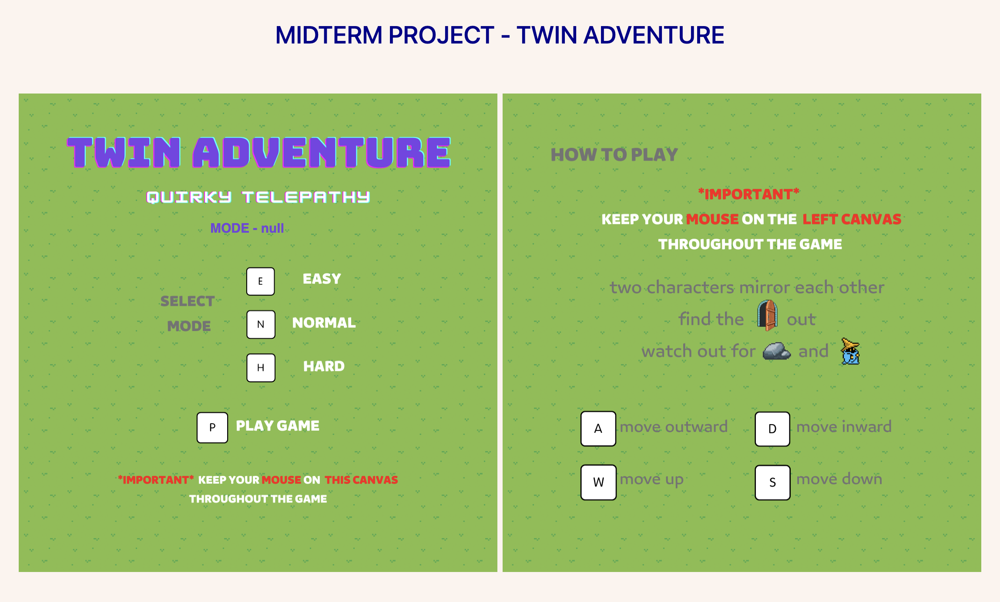
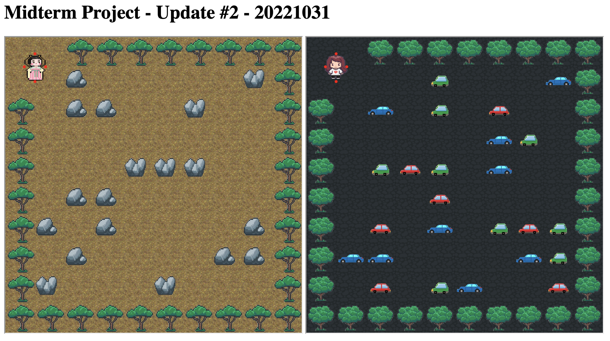
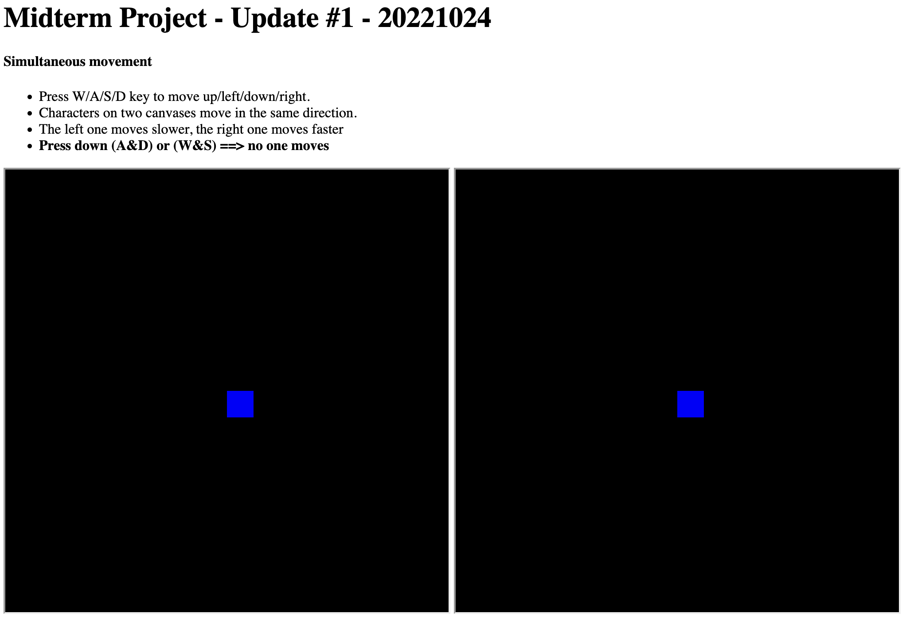

Twins Adventure
Description
Twin Adventure is my Midterm Project for the Fall 2022 Interactive Computing class written using p5.

This is a three-level tile-based game implemented on two canvases. The story is about twin sisters finding each other with their quirky telepathy, aka mirroring. This is made possible by having one sister on each canvas and using global variables to move them around simultaneously mirroring each other.
The ultimate goal for twin sisters is to get to the exits in the middle down below, diagonal to their own starting spots, before the life value runs out. On the left canvas, there are rocks that block the sisters way; on the right canvas, there are gnomes who bring down the sisters life value upon contact. All the rocks, gnomes, hearts etc. live in arrays and OOP is utilized to bring all of them to life.
As a tile-based game, its world is made from 11 x 11 global matrices (nested arrays). The world is presented visually by the javascript file reading the id in each position in the matrices (e.g. if col 2 row 2 is 1, show a tree here). By having sensors around her, the sister can detect the id of the tile she is moving toward and react responsively.
There are three levels of this game:
- Level 1 - Random maps. Random maps are generated every time level 1 begins. This is also the only level the sisters can increase their life value by collecting hearts.
- Level 2 - Random popup. Stones and gnomes pop up and disappear at a certain frequency.
- Level 3 - Random wandering. Gnomes move around randomly and disappear at a certain frequency.
There are three difficulty levels of the game, which can be picked from the initial interface. The difficulty level is stored in the local storage, which remains unchanged until a new difficulty level is picked. The different level of difficulty is mainly reflected in the popup frequency in level 2 and the gnomes wandering speed in level 3.
Short music will be played when the game is over or win. All of the artwork and sound effects are from online open source, such as OpenGame Art.
The customized map feature is explored yet not implemented in the current game consdering the complexity, but can be built into future versions.
Thank you for reading this looong description & playing my quirky game (*¯︶¯*). For this project, feel free to email me at hc2946 [-at-] nyu [-dot-] edu
LINK TO Update #2.5 - 20221101

LINK TO Update #2 - 20221031

Half way through the first level
- The characters should find a way both of them can go and get to the destination in a limited amount of time. (time limit will be made later)
- I built a tile-based map, and I made the characters move on the road and stop when they encounter obstacles.
- I still need more global variables to keep track of whether either one of the characters stops and makes the other stop too.
Concerns
- Not sure how the speed difference feature can work (the characters cannot get to the destination together / it does not make sense to ask players find the only way out if the characters can go to destination one after another)
- Feminism History seems like a topic too heavy for this midterm project. I am not confident that what I made can express this topic properly.
- I am thinking about keeping all the basic ideas the same (i.e. two screens / three levels / voice control etc.) but change to other themes, such as lost sisters with telepathy going through adventures to find each other, in which i can make the two characters move at the same speed.
Half way through the first level
- The characters should find a way both of them can go and get to the destination in a limited amount of time. (time limit will be made later)
- I built a tile-based map, and I made the characters move on the road and stop when they encounter obstacles.
- I still need more global variables to keep track of whether either one of the characters stops and makes the other stop too.
Concerns
- Not sure how the speed difference feature can work (the characters cannot get to the destination together / it does not make sense to ask players find the only way out if the characters can go to destination one after another)
- Feminism History seems like a topic too heavy for this midterm project. I am not confident that what I made can express this topic properly.
- I am thinking about keeping all the basic ideas the same (i.e. two screens / three levels / voice control etc.) but change to other themes, such as lost sisters with telepathy going through adventures to find each other, in which i can make the two characters move at the same speed.
LINK TO Update #1 - 20221024
It becomes a SOLO project now

Simultaneous Movement (delay fixed)
- Press W/A/S/D key to move up/left/down/right.
- Characters on two canvases move in the same direction.
- The left one moves slower, the right one moves faster
- Press down (A&D) or (W&S) ==> no one moves>
Level Specification
-
Level 1
- Characters move forward to get to their own destinations.
- Different moving speeds
- Different life value loss when hit static obstacles
-
Level 2
- Characters move around to get to their own destinations.
- Different moving speeds
- When meet moving objectives, the slow/past character die, and the fast/modern character loses a bit life value
-
Level3
- The modern character stands in the crowd and tries to voice for women. The player will read a text; the louder the user reads, the higher the value in the volume bar, more people gather around and the player gains points.
- But once the player reads out too loud and gets the attention of the police or internet censor, she is muted (volume bar shows 0 no matter how loud the user reads) and the canvas shows “404 page not found”. End of the game.
- The user is never gonna win the 3rd level.
Class Example for Refrence
- moving objectives should move & change direction randomly (see day 10 / ex01 - Random Walker class)
- more people in the crowd should move toward the character with the increasing volume (see day 12 / ex07 - scare the creatures)
Simultaneous Movement (delay fixed)
- Press W/A/S/D key to move up/left/down/right.
- Characters on two canvases move in the same direction.
- The left one moves slower, the right one moves faster
- Press down (A&D) or (W&S) ==> no one moves>
Level Specification
-
Level 1
- Characters move forward to get to their own destinations.
- Different moving speeds
- Different life value loss when hit static obstacles
-
Level 2
- Characters move around to get to their own destinations.
- Different moving speeds
- When meet moving objectives, the slow/past character die, and the fast/modern character loses a bit life value
-
Level3
- The modern character stands in the crowd and tries to voice for women. The player will read a text; the louder the user reads, the higher the value in the volume bar, more people gather around and the player gains points.
- But once the player reads out too loud and gets the attention of the police or internet censor, she is muted (volume bar shows 0 no matter how loud the user reads) and the canvas shows “404 page not found”. End of the game.
- The user is never gonna win the 3rd level.
Class Example for Refrence
- moving objectives should move & change direction randomly (see day 10 / ex01 - Random Walker class)
- more people in the crowd should move toward the character with the increasing volume (see day 12 / ex07 - scare the creatures)
Midterm Project - Proposal
Group Idea: Girls Adventure
Group Members: Hainuo Chen, Susan Zhang
Contact: hc2946@nyu.edu, xz3085@nyu.edu
Proposal:
Our project themed the plight of women and the gradual rise of feminism throughout history. We would like to compare and contrast the discrimination and obstacles encountered by women from different eras. We are interested in implementing multiple canvases and using voice as control.
There will be two separate canvases on the same screen, each with one female character on it: one from a historical time, and the other from the 21st century. They aim to achieve the same goal on their own canvas respectively. We are going to have three levels with different small games varied in settings(eg. workplace/school/public spaces elsewhere eg. streets).
We will refer to similar techniques with the examples shown in class about the character walking into different artworks. Compared to the modern character, the historical characters will almost always find the goal harder to achieve, reflecting the restrictions on women are reduced over time.
For instance, both characters aim to walk to a destination. The character from the 19th century has to wear a heavy dress, move slowly, and be more vulnerable to obstacles on the road. The modern character has more options, which allows quick and dexterous movement. We could assign different speeds and “life value” to each character, and use object-oriented programming for the characters and the obstacles.